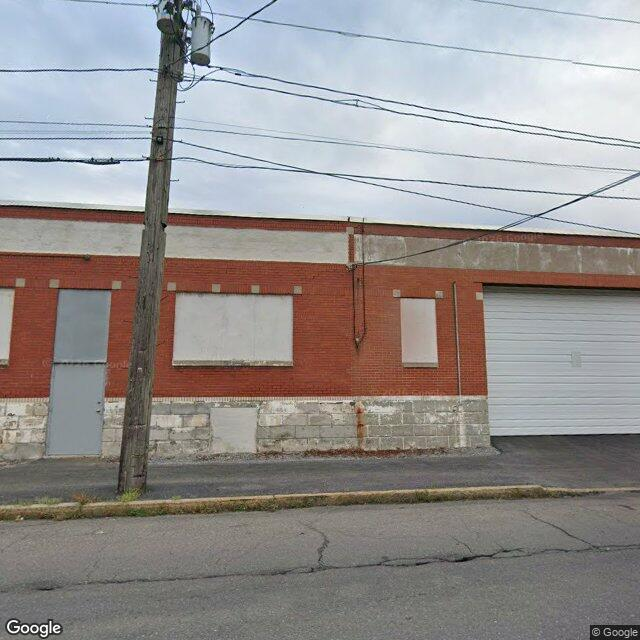

Property entry
708 Hiawatha Blvd E To Grant
Published 2026-06-09T01:03:16+00:00
Parcel key: 003-03-020

boarded window · high boarded window · highAI image read
A single-story brick commercial or industrial building with boarded-up window openings, a metal service door, and a large roll-up garage door.
Property type guess: commercial
Visible conditions
- Multiple window openings are boarded up with painted panels.
- The facade consists of red brick with a concrete block foundation level showing some staining.
- A metal service door and a large white overhead garage door appear intact.
- A wooden utility pole stands directly in front of the building's left side.
Condition scores
- Porch Or Entry
- not_visible
- Roof
- not_visible
- Siding Or Facade
- fair
- Trash Debris
- none_visible
- Vegetation Overgrowth
- minor
- Windows Doors
- fair
- Yard Or Lot
- good
Visible flags
- Active Construction Visible
- no
- Boarded Windows Or Doors
- yes
- Fire Damage Visible
- no
- Structural Damage Visible
- no
- Vacancy Signs Visible
- no
Possible image-only flags
- Boarded-up windows may indicate vacancy or security measures not fully detailed in standard public records.
AI review boxes
- boarded window: Large rectangular window opening covered with a solid board
- boarded window: Smaller vertical window opening covered with a solid board
Review reasons
- Possible image-only issue
- boarded windows or doors
Image quality
- Available
- True
- Bytes
- 69655
- Needs Rerun
- False
['The roof is not visible from this street-level perspective.', 'A utility pole partially obstructs the left portion of the facade.']
ACS tract context
Census Tract 2; Onondaga County; New York
- Housing units
- 1686
- Median gross rent
- 146700
- Median household income
- 51848
- Poverty rate
- 28.1
- Renter-occupied share
- 50.1
- Total population
- 3511
- Vacancy rate
- 14.7
OpenStreetMap nearby
meter search radius
OpenStreetMap lookup failed: HTTP Error 504: Gateway Timeout
Vacant properties 0
No matching records found in this feed.
Rental registry 0
No matching records found in this feed.
Code violations 0
No matching records found in this feed.
Unfit properties 0
No matching records found in this feed.